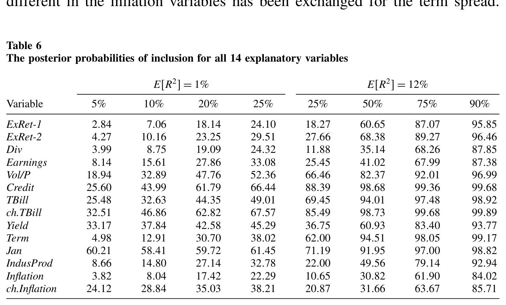
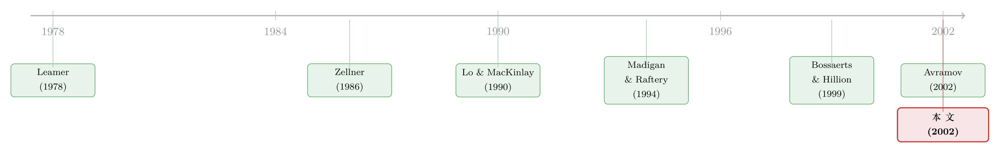

十四个变量，一万六千个模型：把「不知道该信哪个」算进价格里
本文读的是 Cremers (2002, Review of Financial Studies)：过去二十年里，几十篇论文都说股票收益「可以预测」，却没人能就「到底该用哪些变量」达成共识。作者把这种分歧本身当成研究对象——不再去挑那个 t 值最大的「最佳模型」，而是把 14 个候选变量能拼出的全部 2^14 = 16,384 个线性模型一次性放在贝叶斯框架里同时比较，按后验概率加权。结论是：数据给出的后验，总体上比怀疑者和自信者各自的先验都更支持「可预测」；但能真正脱颖而出的，只有六个变量，而那些被反复引用的老牌预测因子——滞后收益、股利率、盈利率——在这里表现平平。
1 一个被所有人绕开的问题
先讲一个让人有点尴尬的事实。
在过去一二十年里，「股票收益到底可不可以预测」大概是实证资产定价里吵得最凶的题目。一边是浩浩荡荡的「可预测」阵营：人们找出了股利率、盈利率、期限利差、信用利差、短端利率、工业产出增长率……几乎每隔一阵就有一篇论文，举着一个新变量，说「看，它能解释条件期望收益的变化」。另一边是少数「怀疑派」，搬出数据窥探 (data snooping) 的大旗：你们这些显著性，会不会只是把同一份数据翻来覆去地找，找出来的巧合？
奇怪的地方在于：吵了这么久，「可预测」这件事几乎成了共识，但「该用哪些变量」却始终没有共识。 作者在文章一开头就摆了一张表（Table 1），把 1986–1999 年间 11 篇有代表性的预测性论文并排放在一起，列出它们各自用了哪些变量。你会发现一个近乎滑稽的景象：每篇文章都精心挑了「自己那一套」变量，彼此重叠得很少；同一个短端国债利率，多数文章说它「至少在样本内有用」，可 Pontiff and Schall (1998) 和 Bossaerts and Hillion (1999) 偏偏都说没用。
于是一个自然的问题是：如果连「该看哪些变量」都没人说得清，那我们到底在「显著」些什么？
传统的做法，是去找那个 t 统计量最大、调整后 R² 最高的「最佳模型」，然后宣布：就是它了。但作者一针见血地指出，这条路从贝叶斯的角度看是走偏了——它把全部权重押在了一个特定模型上，而恰恰忽略了整件事里最要命的东西：
研究者对「正确模型到底是哪个」抱有巨大的不确定性。把 100% 的信心交给一个被某种准则挑出来的「冠军模型」，等于假装这种不确定性不存在。
这就是本文的核心张力。它不打算再添一个新变量、再刷一个更高的 R²。它要做的，是退后一步，把「不知道该信哪个模型」这件事本身，明明白白地写进估计里。
（关于「该信哪一个预测变量」这条更晚近的线索，可参见《该信哪一个预测变量？——把「不知道用哪个模型」算进价格里》。）
2 识别的转身：不是挑模型，而是给所有模型称重
那么，怎么把「模型不确定性」算进去？
作者的答案，干脆得有点暴力：别挑了，全都要。
具体而言，他从过往文献里精选出 14 个候选预测变量（13 类变量各取一个，外加一个额外的滞后收益），用它们去预测 S&P 500 指数的超额收益。这 14 个变量能组合出的全部线性模型，一共是 2^14 = 16,384 个——从「一个变量都不要」的常数模型，到「14 个全要」的满载模型，每一个子集都算一个「个体模型 (individual model)」。
接着，一个自然的问题是：这一万六千多个模型，谁说了算？
这里就是整篇文章方法论上真正关键的一步。传统统计学的模型选择，本质是一道「非黑即白」的判决：一个变量要么被纳入（系数留下），要么被剔除（系数强行设为零），中间没有灰度。而贝叶斯框架允许你对每一个模型给出一个后验概率 (posterior probability)——它有多大程度上能描述这份数据。所谓的「整体模型 (overall model)」，就是把这 16,384 个个体模型按各自的后验概率加权平均得到的那个东西。权重之和为一。
这个转身的妙处在于：
- 数据窥探被关进了笼子。 在这套框架里，唯一还残留「窥探」嫌疑的，只剩最初挑这 14 个变量这一步；而这 14 个变量全都是前人文献已经认定有预测力的。一旦变量集定下来，后面对 16,384 个模型的比较是同时进行、无可挑剔的，再没有「我偷偷多试了几个设定」的空间。
- 每个变量的「身价」有了连续刻度。 你不再问「这个变量显著吗」，而是问「在所有模型加权之后，它被纳入的后验概率有多大」。这叫做纳入的后验概率 (posterior probability of inclusion)。
于是「该信哪些变量」这个老问题，被翻译成了一个干净的贝叶斯问题：在看过数据之后，每个变量被纳入的概率，相比先验，是升了还是降了？
3 模型：先验、后验，与那个叫 ψ 的旋钮
这是一篇有完整模型设定的论文，值得把骨架一步步拆开来看。所有变量都先做了标准化，样本均值为 0、样本方差为 1。
第一步：每个个体模型长什么样。 每一个个体模型都是一个标准的线性正态回归：
$$ Y_R = \beta_0\cdot \iota_T + \sum_{i=1}^{\eta}\beta_i\cdot X_i + \varepsilon = \beta'\cdot X_{\eta+1} + \varepsilon $$
这里 \(Y_R\) 是 \(T\) 维的指数超额收益向量，\(\beta_0\) 是所有模型都包含的常数，\(X_{\eta+1}\) 是「一列全为 1 的常数项 + \(\eta\) 个被选中的解释变量」拼成的矩阵，\(\varepsilon\) 是均值为 0、方差为 \(\sigma^2\) 的独立同分布正态扰动。16,384 个模型的区别，仅仅在于它们各自选了 14 个变量里的哪一个子集。
第二步：先验里要装进「经济直觉」。 作者要设两组先验。第一组，是每个变量被纳入的先验概率 \(\pi\)。由于事先没有理由认为某个变量比另一个更该入选，就给每个变量一个相等且独立的纳入概率 \(\pi\)。于是一个恰好包含 \(\eta\) 个变量的模型，其先验概率是
$$ P(\text{Model}[X_\eta]) = \pi^{\eta}\cdot(1-\pi)^{14-\eta} $$
这个式子很有味道。\(\pi = 0.5\) 时，所有模型先验等概；\(\pi = 0.25\) 时，少一个变量的模型，先验上要比多一个变量的模型可能 $0.75/0.25 = 3$ 倍——也就是说，调低 \(\pi\)，等于先验上偏爱更精简的模型。「完全不可预测」（一个变量都不纳入）的先验概率是 \((1-\pi)^{14}\)，先验期望的纳入变量数则是 \(14\pi\)。
第三步：参数的先验要「平」。 对系数 \(\beta\)，作者坦承自己没有任何来自经济学的先验信息，于是选了一个以零为中心、方差相对样本方差极大的先验——平到几乎不影响结论，让后验由数据主导（Edwards, Lindman, and Savage 1963 称之为「稳定估计」）。技术上用的是 Zellner (1986) 的自然共轭 g 先验 (g-prior)：
$$ P(\beta\mid\sigma^2) = N_{\eta+1}\!\left(0_{\eta+1},\ \sigma^2\cdot\psi\cdot(X_{\eta+1}'X_{\eta+1})^{-1}\right),\qquad P(\sigma^2)=IG(s_0^2,\ T) $$
注意这里冒出来一个标量 \(\psi\)，它是整套先验里唯一一个需要你亲手拧的旋钮，下文马上会讲它的妙用。
第四步：把参数积分掉，得到后验。 把 \(\beta\) 和 \(\sigma^2\) 的先验与似然相乘、再解析地积分掉，每个模型的后验概率就只剩下一个惊人简洁的表达式：
这三块的分工极其清楚：第一块是你的先验信念，第三块是数据的证据，而中间那块 \((1+\psi)^{-\eta/2}\)，是奥卡姆剃刀——模型越大，这一项越小，越被压制。
而 \(\psi\) 这个旋钮的直觉非常漂亮：\(\psi\) 调大，等于先验上允许每个 \(\beta\) 取更大的值，于是每个变量「单枪匹马」就能解释更多的可预测性；那么要凑出同样多的可预测性，你需要的变量就更少——调大 \(\psi\)，等于更狠地惩罚大模型。 这样一来，作者就不必直接对那个抽象的 \(\psi\) 表态，而可以通过两个更有经济意味的量来校准先验：预期的 \(E[R^2]\) 和预期的 \(E[\sigma^2]\)。
其中 \(s_1^2\) 这个后验量也值得一提，它可以被读成三样东西的平均：先验拟合 \(s_0^2\)、OLS 残差平方和，以及「先验猜测离 OLS 估计有多远」的那一项（不过在相关的 \(\psi\) 取值下，最后这一项极小）：
$$ s_1^2 = \frac{1}{2T}\!\left[T\cdot s_0^2 + (Y_R-\beta_{OLS}'X_{\eta+1})'(Y_R-\beta_{OLS}'X_{\eta+1}) + \frac{1}{1+\psi}\beta_{OLS}'X_{\eta+1}'X_{\eta+1}\beta_{OLS}\right] $$
4 怀疑者与自信者：把分歧装进两组先验
模型搭好了，怎么用？
这是本文叙事上很讨巧的设计：作者没有假装自己客观中立，而是把市场上真实存在的两种人请了进来，让数据分别去说服他们。
- 怀疑型投资者 (skeptic)：他几乎把所有「可预测」都看成虚假的。先验设为 \(E[R^2]=1\%\)、\(E[\sigma^2]=0.99\)，纳入概率 \(\pi\) 取 \(0.05,\ 0.10,\ 0.20,\ 0.25\)——都很小，倾向于精简甚至空模型。
- 自信型投资者 (confident)：他是可预测性的坚定信徒。先验设为 \(E[R^2]=12\%\)、\(E[\sigma^2]=0.92\)，\(\pi\) 取 \(0.25,\ 0.50,\ 0.75,\ 0.90\)。那个 12% 不是随便定的，而是 Table 1 里「可预测」阵营各篇文章结果的一个合理平均。
于是问题变得很具体：看过 1954–1998 年的数据之后，这两个人的后验，会往哪边挪？
然后，结果出来了，而且方向一致：
数据给出的后验，总体上比两种人各自的先验都更支持「股票收益可预测」。换句话说，连怀疑者在看过数据后，都被往「可预测」的方向推了一把。
但真正有意思的反转在第二层。当你去看「到底是哪些变量」时，贝叶斯方法只挑出了六个真正站得住的变量——对这六个变量，无论 \(\pi\) 取何值，其纳入的后验概率都高于先验概率。而那些被文献反复供奉的明星——滞后收益、股利率、盈利率——在这套更严苛的称重里表现相当平庸。
更微妙的一点：如果你一开始就对可预测性高度自信（\(\pi\) 很大），反而很难把最好的预测变量区分出来。 因为当你先验上认定「变量大多有用」时，数据已经没多少空间再去帮你分辨谁强谁弱了。
如表 6 所示，对怀疑型投资者（\(E[R^2]=1\%\)）而言，各变量纳入的后验概率被一一列出，少数几个明显从背景里浮了出来，而多数变量则贴着、甚至低于先验线徘徊。

Table 6: shows that for the skeptic investor with E(cid:19)R2(cid:20)=1%, seven vari-
最后，样本外的检验把刀递到了传统方法的脖子上。作者用滚动窗口做样本外预测，发现：那些被调整后 R²、AIC 等经典准则挑出来的「最佳」个体模型，样本外表现往往还不如那个什么都不预测的常数模型——这与它们样本内压倒性的「可预测」证据形成了刺眼的反差。而贝叶斯的后验加权平均模型，样本内与样本外则保持一致：对所有先验，它都略好于常数模型，给出一些虽小但稳健的可预测性证据。
为什么经典方法会摔得这么惨？作者的解释正好咬回主线：经典检验「非黑即白」，把 100% 的权重押在纳入或剔除上，于是把那个被冠军模型挑出来的设定，当成了确定无疑的真理；这恰恰严重低估了模型不确定性，也就严重低估了我们对任何感兴趣的量的不确定性。把权重摊到所有模型上，反而稳。
5 文献脉络
把这篇文章放回它的坐标系里看，它其实站在两条河流的交汇处。
第一条河，是「股票收益可预测性」的实证大潮。 从 Chen, Roll, and Ross (1986) 用宏观因子解释股市，到 Campbell (1987) 的期限结构、Ferson and Harvey (1991, 1993, 1999) 一系列对时变风险溢价的刻画，再到 Pesaran and Timmermann (1995)——「可预测」的证据越堆越高。Fama (1991) 的综述是这条河的一座地标。但与此并行的，是一股逆流：Lo and MacKinlay (1990) 系统地敲打「数据窥探偏误」，Foster, Smith, and Whaley (1997) 给出了校正过度拟合的程序，Bossaerts and Hillion (1999) 干脆用统计模型选择准则去防窥探，结果发现那些「最佳」模型根本没有样本外预测力。本文与这股逆流同气连枝——它对「挑冠军模型」这件事的怀疑，正是从这里长出来的。（关于「数据窥探/p-hacking」这条更宏大的拷问，可参见《把因子拖回 1800 年：一场对 p-hacking 的两百年审判》；关于股利率这类比率到底能不能预测，可参见《股利收益率到底能不能预测收益？》。）
第二条河，是贝叶斯模型不确定性的方法论。 源头是 Leamer (1978) 那本名著里提出的标准解法：不要条件在单一模型上，而要条件在整个信息集上。这个思想在线性回归里的实现，经 Mitchell and Beauchamp (1988)、George and McCulloch (1993)、Raftery, Madigan, and Hoeting (1997)、Fernández, Ley, and Steel (2001) 一路打磨成熟；而 Madigan and Raftery (1994) 更证明了，按对数评分准则衡量，对所有模型做平均能给出最优的预测能力。再加上 Zellner (1986) 的 g 先验提供了趁手的工具——本文要做的，就是把这条成熟的方法论，第一次系统地搬到「股票收益预测」这个具体战场上。

值得一提的是，几乎在同一时间，Avramov (2002) 独立地从「预测模型不确定性」的角度研究最优组合选择；而 MacKinlay and Pastor (2000)、Pastor (2000)、Pastor and Stambaugh (2000) 则在讨论资产定价模型的先验错定价不确定性。本文与它们彼此呼应，共同构成了世纪之交「把模型不确定性请进金融」的那一波浪潮。
6 评论与延伸（Q&A + 研究方向）
(a) 几个可能的疑问
Q：这跟普通的「贝叶斯模型平均 (BMA)」有什么不一样？
内核就是 BMA——对 $2^{14}$ 个模型按后验概率加权。本文的贡献不在算法新，而在把先验校准成有经济意味的量：不去直接拍脑袋定那个抽象的 g 先验 \(\psi\)，而是通过 \(E[R^2]\)、\(E[\sigma^2]\) 和纳入概率 \(\pi\) 来设定，于是「怀疑者」和「自信者」的分歧能被干净地参数化，结论也就能直接对话现有文献。
Q：「数据窥探被关进笼子」——可挑那 14 个变量本身不就是窥探吗？
作者很诚实地承认了这一点：残留的窥探就在最初选变量这一步。他的辩护是，这 14 个变量全部来自前人已认定有预测力的文献，且事先被赋予相等的纳入概率，没有厚此薄彼。所以严格说，本文消除的是「在给定变量集之后、反复试设定」那一层窥探，而不是「变量从天而降」那一层。
Q：为什么样本内显著、样本外却归零的，偏偏是经典方法挑出的「最佳模型」？
因为经典检验把 100% 权重押在一个被选中的设定上，等于假装「我选对了模型」这件事毫无不确定性。这会系统性地低估总的不确定性，于是样本内看着风光，换一段数据就原形毕露。贝叶斯加权把权重摊薄到所有模型，反而样本内外一致——稳，但溢价也小。
Q：六个变量「站出来」，可那些老牌明星（股利率、盈利率、滞后收益）为什么反而平庸？
关键在「同时比较」。在单变量或小模型里，股利率因为分母带着价格，只要预期收益有任何时变就会自动显著；可一旦把它扔进与其他十几个变量同台竞争、并对模型规模施加奥卡姆惩罚的环境里，它能额外贡献的增量信息就被稀释了。显著，不等于在「全场竞争」中不可替代。
Q：那个 \(\psi\)（g 先验标量）会不会主导了结论？
它确实是关键旋钮——调大 \(\psi\) 就更狠地惩罚大模型。但作者的处理是不直接对 \(\psi\) 表态，而是把它锚定到 \(E[R^2]\) 上，并在大范围的 \(\pi\) 上扫一遍看结论稳不稳。核心结论（后验比先验更支持可预测、六个变量胜出）对这些选择是稳健的，这正是「先验相对平、让数据主导」设计的用意。
Q：「自信反而看不清」，这是 bug 还是 feature？
是 feature，而且很深刻。当你先验上几乎确定「变量都有用」（\(\pi\to 1\)），数据就没有空间再帮你分辨谁强谁弱——后验几乎复制先验。这恰恰说明：强先验会吃掉数据的辨识力。它提醒「可预测」阵营，越是笃信，越要警惕自己看到的「区分度」可能只是先验的回声。
(b) 几个可能的研究问题与提案
1. 把这套框架搬到公司债收益预测上。
【经济故事】股市可预测性的「变量动物园」之争，在公司债/信用市场有一个几乎一模一样的翻版：信用利差、期限利差、违约率、流动性指标、宏观因子……谁真正预测了债券超额收益，同样众说纷纭。把 Cremers 的贝叶斯模型选择直接套上去，能给「信用市场可预测性」做一次同样严苛的称重。
【可行性】高。数据现成（如 ICE/BofA、TRACE 衍生的月度指数收益 + 标准预测变量集），方法可直接移植，唯一要小心的是债券收益的非正态与流动性诱导的序列相关，可能需要放松正态假设。
2. 让纳入先验 \(\pi\) 随「经济可解释性」分层。
【经济故事】本文给所有变量相等的 \(\pi\)，但作者自己也提到，框架允许对「能讲清经济机制」的变量给高先验、对「纯数据驱动」的变量给低先验。一个值得做的实验：把变量按是否有理论支撑分组，看后验结论会不会被这种结构化先验显著改写——这能量化「理论 vs. 数据」之争到底值多少后验概率。
【可行性】高。纯属在现有框架里改先验设定，计算量不变，关键是分组标准要事先登记、避免又一轮窥探。
3. 把外资持有人占比纳入候选变量集。
【经济故事】跨境资本流动与外资持股近年被认为携带了关于流动性与风险溢价的信息。一个自然的问题是：当把「外资持有份额/流动」放进 14 个老变量旁边一起称重，它能不能在贝叶斯竞争中浮出水面？这相当于用本文的「无偏裁判」去检验一个较新的预测变量是否名副其实。
【可行性】中。外资持仓数据（如 TIC、各国央行托管数据）频率较低、覆盖不全，与月度收益对齐有难度；识别上还需处理外资流入与收益的内生性，单纯放进预测回归只能回答「预测」而非「因果」。
4. 在结构性断点下重做后验加权。
【经济故事】可预测性常被怀疑是「不稳定的」——某个变量只在某段时期有效（Pontiff and Schall 的 book-to-market 在 1960 后就失效了）。把模型不确定性与参数时变/断点结合起来，问的是：当我们连「模型是否随时间改变」都不确定时，后验还支持可预测吗？
【可行性】中。需要把贝叶斯模型选择嵌进带断点或时变参数的设定，计算和先验设定都更复杂，但有现成的贝叶斯变点文献可借。
我的判断
这篇文章的贡献，不在于又发现了一个能预测收益的变量，而在于换了一种提问的方式：它把「该信哪个模型」这个一直被绕开的元问题，正面摆上了桌面，并给出了一个可操作、可校准、且能与现有文献直接对话的答案。「让怀疑者和自信者各带先验入场，看数据把他们推向哪里」这个叙事设计尤其漂亮——它把一个抽象的统计工具，变成了一场关于信念的公开实验。结论也有反直觉的力量：可预测性整体上被数据支持，但经得起「全场竞争」的变量寥寥无几，而样本外，经典的「冠军模型」甚至打不过什么都不做的常数模型。
要说对识别的担忧，我有两点。其一，变量集的选择仍是一道未关严的后门：14 个变量怎么来的、为什么是它们而不是别的，这一步的窥探无法被框架内部消化，结论对这个初始集合有多敏感，值得更系统地压力测试。其二，正态 + 独立同分布的误差假设对月度股票收益（厚尾、波动聚集、Stambaugh 1999 指出的预测变量持续性偏误）是个不小的简化，后验概率对此可能并非无动于衷。
后续我最想看到的，是把这套「无偏裁判」用到那些争议更大、数据更脏的市场——尤其是公司债与信用市场——并把误差分布放松到能容纳厚尾与序列相关。如果在那里，「六个变量胜出、明星变量平庸、样本外打不过常数」的图景依然成立，那本文的方法论价值，就远不止于一次对股市预测性争论的优雅了断。
参考文献
- Avramov, D. (2002). Stock-Return Predictability and Model Uncertainty. Journal of Financial Economics 64, 423–458.
- Bossaerts, P., and P. Hillion (1999). Implementing Statistical Criteria to Select Return Forecasting Models: What Do We Learn? Review of Financial Studies 12(2), 405–428.
- Campbell, J. Y. (1987). Stock Returns and the Term Structure. Journal of Financial Economics 18(2), 373–399.
- Chen, N., R. Roll, and S. Ross (1986). Economic Forces and the Stock Market. Journal of Business 59(3), 383–403.
- Cremers, K. J. M. (2002). Stock Return Predictability: A Bayesian Model Selection Perspective. Review of Financial Studies 15(4), 1223–1249.
- Fama, E. F. (1991). Efficient Capital Markets: II. Journal of Finance 46(5), 1575–1618.
- Fernández, C., E. Ley, and M. F. J. Steel (2001). Benchmark Priors for Bayesian Model Averaging. Journal of Econometrics 100(2), 381–427.
- Foster, F. D., T. Smith, and R. E. Whaley (1997). Assessing Goodness-of-Fit of Asset Pricing Models: The Distribution of the Maximal R². Journal of Finance 52(2), 591–607.
- George, E. I., and R. E. McCulloch (1993). Variable Selection via Gibbs Sampling. Journal of the American Statistical Association 88(423), 881–890.
- Leamer, E. E. (1978). Specification Searches. Wiley, New York.
- Lo, A., and A. C. MacKinlay (1990). Data-Snooping Biases in Tests of Financial Asset Pricing Models. Review of Financial Studies 3(3), 431–467.
- Madigan, D., and A. E. Raftery (1994). Model Selection and Accounting for Model Uncertainty in Graphical Models Using Occam's Window. Journal of the American Statistical Association 89(428), 1535–1546.
- Pesaran, M. H., and A. Timmermann (1995). Predictability of Stock Returns: Robustness and Economic Significance. Journal of Finance 50(4), 1201–1228.
- Pontiff, J., and L. D. Schall (1998). Book-to-Market Ratios as Predictors of Market Returns. Journal of Financial Economics 49(2), 141–160.
- Raftery, A. E., D. Madigan, and J. A. Hoeting (1997). Bayesian Model Averaging for Linear Regression Models. Journal of the American Statistical Association 92(437), 179–191.
- Stambaugh, R. F. (1999). Predictive Regressions. Journal of Financial Economics 54(3), 375–421.
- Zellner, A. (1986). On Assessing Prior Distributions and Bayesian Regression Analysis with g-Prior Distributions. In Bayesian Inference and Decision Techniques, North-Holland, Amsterdam, 233–243.